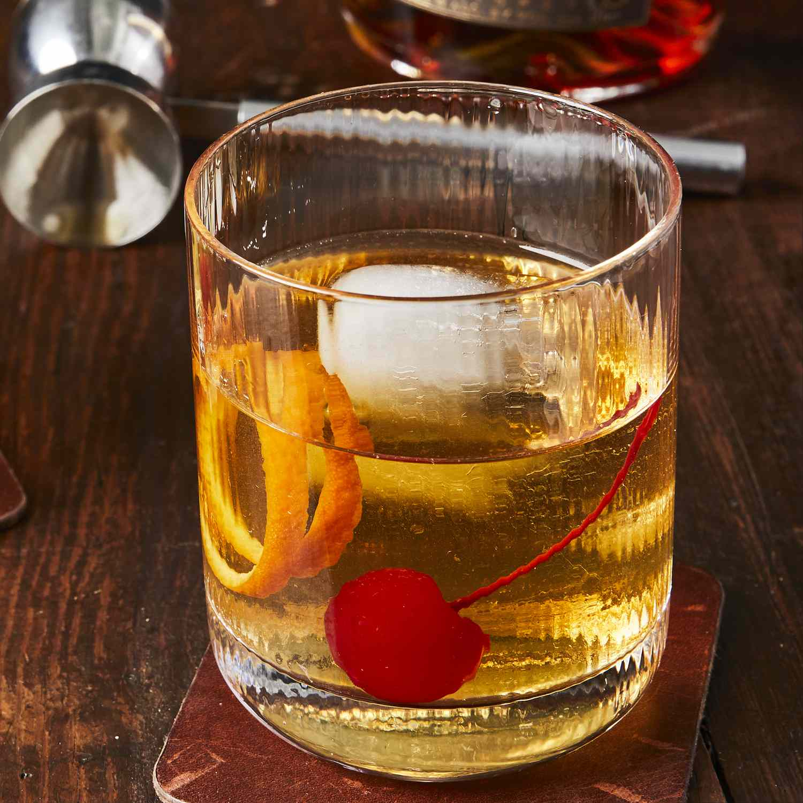

Old Fashioned Cocktail

Discription
A Delightful and easy recipe for a cocktail that spans through the ages ( well as far back presumably ,as a few hundred years ago)
Ingredients
- Bourbon whiskey
- Simple Syrup
- Orange peels
- Maraschino cherry
- Bitters
- water
- Ice cubes
Steps
- Gather all ingredients
- Mix water, bitters and simple syrup and stir to combine
- Add Ice cubes
- Pour in bourbon
- muddle the cherry and stir well
- Garnish wth orange slice